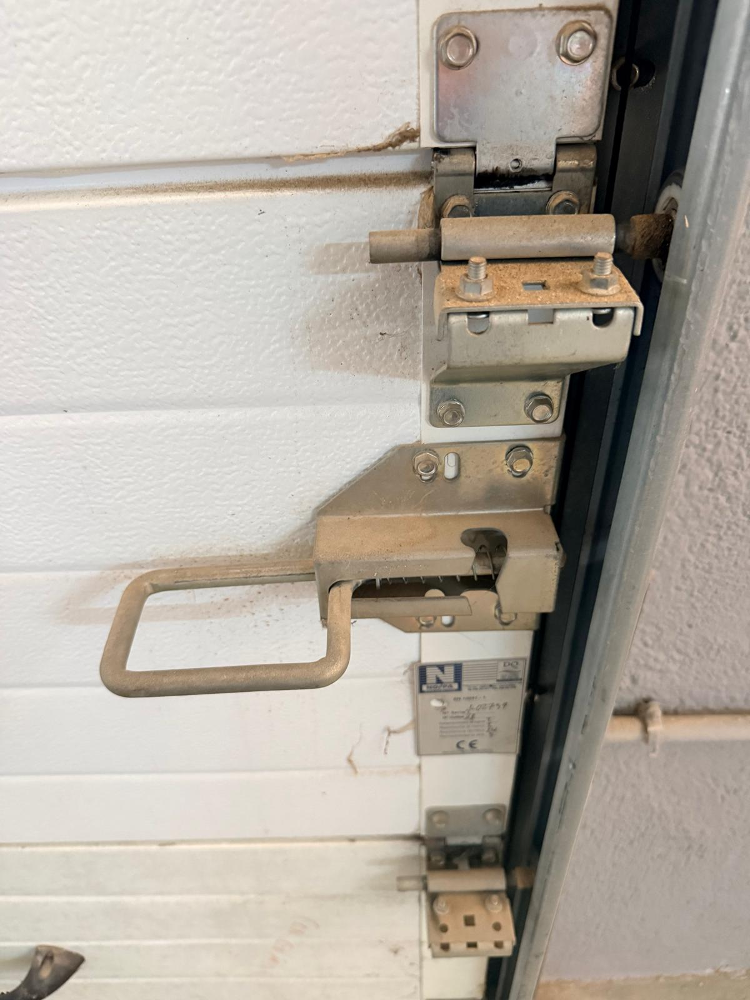
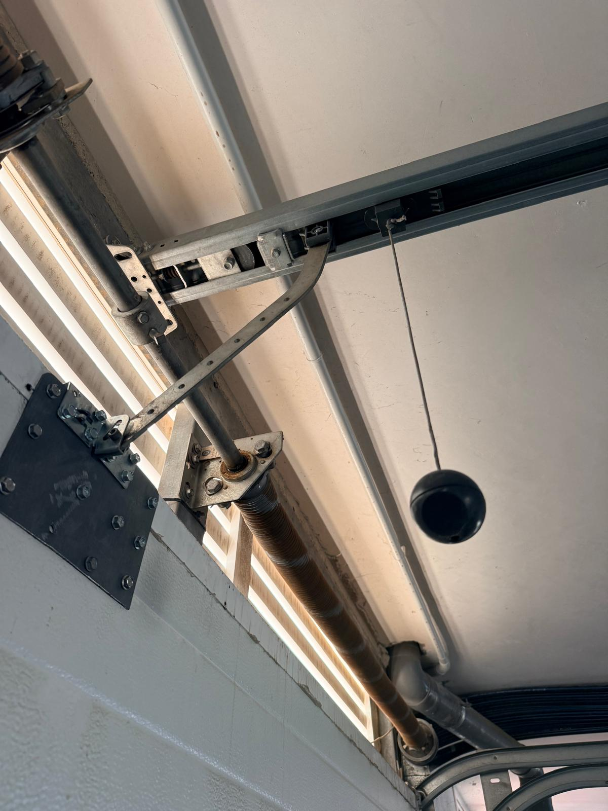
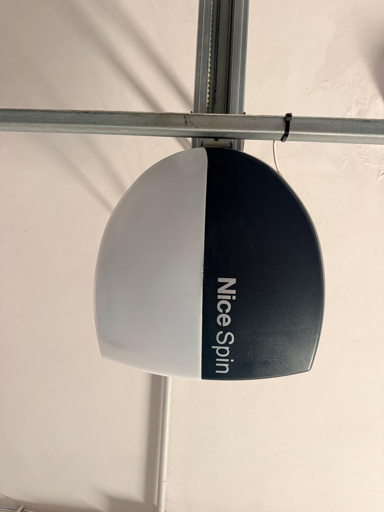
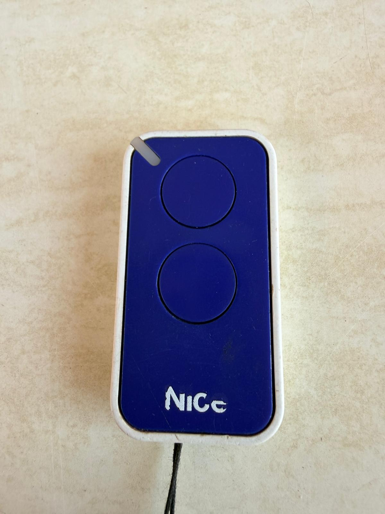
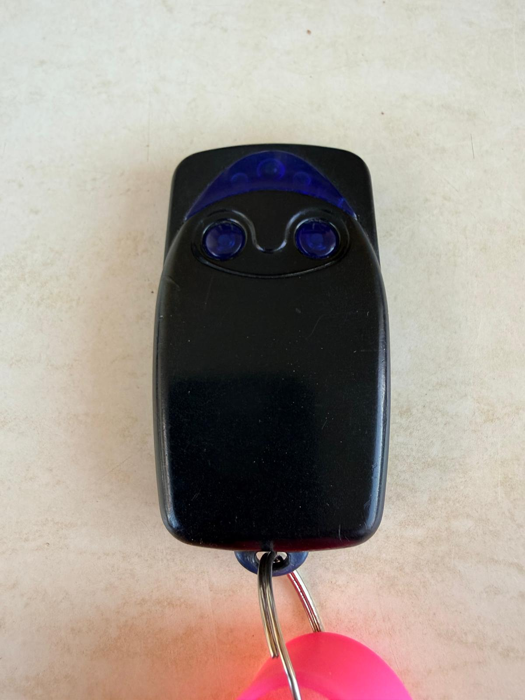

Garage & Gate Access
Nice Spin motor operation, emergency manual override, visual guide, and key fob programming.
How the Garage Gate Works
The main entrance to the underground car park is operated by a ceiling-mounted Nice Spin motor running along an overhead rail.
When you press your key fob, it sends a secure signal to a central control receiver located inside the locked communal plant room. The motor simply lifts and lowers the door—all fob permissions and security codes are stored and managed inside that central control unit.
Visual Component Reference

Frame & Manual Lock Bolt
Inside frame showing the manual slide bolt (top) and steel lifting handle (lower section).

Carriage & Release Cord
Overhead track showing the drive carriage, towing arm, and black pull-cord release toggle.

Overhead Motor Unit
Nice Spin motor assembly mounted on the ceiling directly above the driveway entrance.
Emergency Manual Opening Instructions
During power cuts or system maintenance, follow these steps to open or close the gate manually.
Check the Frame Lock Bolt
Inspect the inside frame of the door panel (Photo 1). Ensure the manual steel slide bolt is fully pulled back (unlocked). If engaged into the track, the gate cannot move.
Disengage the Motor Drive
Locate the black ball hanging from the overhead track (Photo 2). Pull the ball straight down firmly until you hear a clear click to uncouple the door from the motor belt.
Pull the release cord straight down only. Never pull horizontally or drag the door using the cord, as sideways pulling will break the internal release mechanism.
Lift or Lower the Door
Grasp the metal handle on the lower door panel (Photo 1) to lift or lower the gate smoothly along its side tracks by hand.
Re-engage Automatic Mode
Once power is restored, pull the release cord back towards the motor unit or press your key fob. The carriage will re-latch automatically onto the drive belt.
Garage Key Fobs & Replacement
Official Fob Types
Two official key fob models are used across the complex:

Nice Flor-S
Classic rectangular dark blue or black fob with 2 or 4 buttons.

Nice ERA INTI
Modern compact square fob, available in various colours.
Battery Replacement
If your fob LED is dim or fails to illuminate entirely, replace the coin battery:
- Pry open the plastic casing gently using a coin or small screwdriver along the side seam.
- Remove the exhausted coin battery (Type CR2032 for ERA INTI or CR2016 for Flor-S).
- Insert a fresh 3V battery with the positive (+) side facing up, then snap the shell together.
Troubleshooting Connection
If the red LED flashes on button press but the gate fails to respond (even with a fresh battery), the fob has lost its digital sync or its security clearance was wiped from the main receiver memory. The fob must be re-authorised.
Ordering & Authorisation Procedure
Purchasing a Replacement Fob
You can order compatible key fobs directly online (e.g. Amazon):
- Official Nice Fobs:
Nice ERA INTI 2-ChannelorNice Flor-S(Approx. €18 – €25 on Amazon). - Generic Fobs: 433.92 MHz rolling-code fobs compatible with Nice Flor-S (Approx. €8 – €12).
Authorising Your New Fob
A new key fob will not open the gate out of the box because the complex uses a secure rolling-code system. Every new remote must be registered into the central control memory.
Getting Access: Contact Francisca in order to obtain the code needed for this specific gate.
Authorisation Fee: Check with management regarding any local registration costs.
The system extracts the remote's unique factory digital ID and uploads it directly into the memory list of the Mirador del Mar gate system. Once registered, the gate will immediately recognise your remote.
Technical Overview: Nice & Rolling Code System
For a quick technical look at how the remotes and gate communicate:
- Frequency: Operates on standard 433.92 MHz radio frequency.
- Rolling Code Security: Each button press generates a unique encrypted code using a rotating counter. This prevents code-grabbing and replay attacks.
- Memory Registration: Because of the rolling code protocol, remotes cannot simply be cloned over the air; they must be explicitly programmed into the central receiver's memory database.